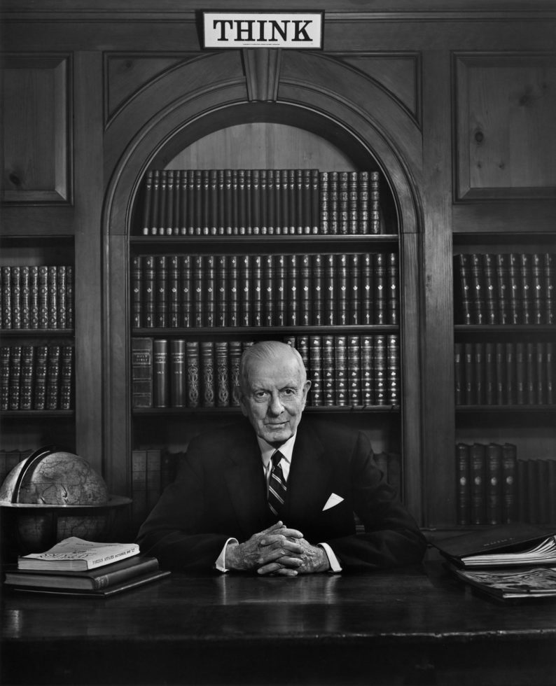
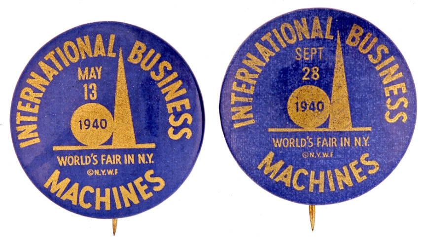

Thomas J.Watson
Thomas John Watson Sr. (February 17, 1874 – June 19, 1956) was an American businessman who served as the chairman and CEO of IBM.[1][2] He oversaw the company's growth into an international force from 1914 to 1956. Watson developed IBM's management style and corporate culture from John Henry Patterson's training at NCR.[3] He turned the company into a highly effective selling organization, based largely on punched card tabulating machines. A leading self-made industrialist,[4] he was one of the richest men of his time and was called the world's greatest salesman when he died in 1956.

- Thomas watson was born in campbell (feb17 1847) Newwyork and was the fifth child of thomas and fulton watson
- Having given up his first job—teaching—after just one day, Watson took a year's course in accounting and business at the Miller School of Commerce in Elmira, New York. He left the school in 1891, taking a job at $6 a week as bookkeeper for Clarence Risley's Market in Painted Post. One year later he joined a traveling salesman, George Cornwell, peddling organs and pianos around the farms for William Bronson's local hardware store, Watson's first sales job. When Cornwell left, Watson continued alone, earning $10 per week. After two years of this life, he realized he would be earning $70 per week if he were on a commission. His indignation on making this discovery was such that he quit and moved from his familiar surroundings to the relative metropolis of Buffalo.[6]
Watson then spent a very brief period selling sewing machines for Wheeler and Wilson. According to son, Tom Watson, Jr.'s, autobiography:
- Thomas watson was usially regarded as the top business man at the time as it came with it he was really hard to contact but usally one could see him in many of the tv shows as the worlds greatest business man

| BORN IN |
DEATH DATE |
| 1847 |
1956 |
About watson